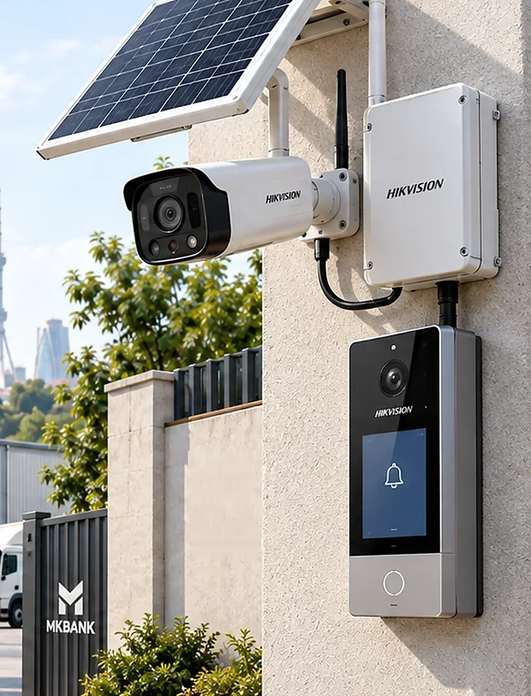
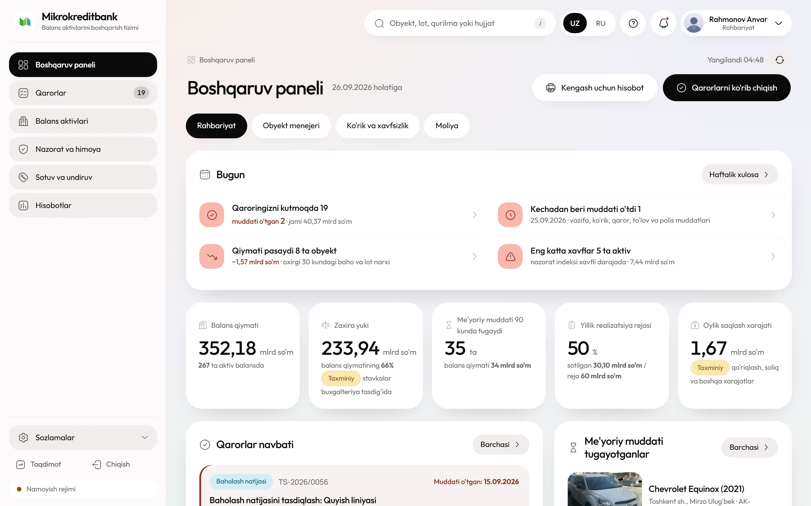

Bitta korpusda kamera, quyosh paneli, akkumulyator va 4G modem. Obyektga na kabel, na elektr kiritiladi — lekin butun tanlov ikkita sinf orasida bo'ladi va ular dekabrda bir-biridan keskin farq qiladi.
7,4 Vt·soat6,5 Vt panel dekabrda beradi
40 hodisabir sutkalik energiya byudjeti
0 °C / −20 °Cikki sinfning quyi chegarasi
5–9 mln so'mbir kamerali obyekt

Quyosh paneli, akkumulyator qutisi va 4G moduli bitta ustunda — kabel yo'q
01
Ikki sinf, bitta nom
Hikvision'ning quyosh-4G liniyasida bir-biriga o'xshamaydigan ikkita mahsulot bor. Katalogda ikkalasi ham «avtonom quyosh kamerasi» deb ataladi, ammo farq dekabrda va sovuqda ko'rinadi — ya'ni aynan bankka kerak bo'lgan paytda.
Ko'rsatkich
Ixcham sinf
Perimetr sinfi
Quyosh paneli
6,5 Vt
80 Vt
Akkumulyator
51,46 Vt·soat, NMC
360 Vt·soat
Ishlash harorati
0…+50 °C
−20…+60 °C
Zaryad harorati
0…+45 °C
−20…+45 °C
Quyoshsiz, faol rejim
1,5 kun
8 kun
Quyoshsiz, kutish rejimi
11 kun
80 kun
Uchinchi tomon protokoli
ISAPI, SDK, ISUP
ONVIF Profile S, G, T
Komplektga microSD karta, kronshteyn va SIM kirmaydi — ular alohida buyurtma qilinadi va smetada alohida qator bo'ladi.
Ixcham sinf 0 °C dan past haroratda na ishlaydi, na zaryadlanadi. Toshkentda dekabr tunlari muntazam shu chegaradan pastga tushadi, shuning uchun ochiq joyga faqat perimetr sinfi qo'yiladi.
02
Kamera bir sutkada nima qiladi
Bu kamera doimiy yozmaydi va yozishga urinmaydi ham. U sutkaning 99 foizini 80 mVt iste'mol qiladigan kutish rejimida o'tkazadi, PIR yoki radar datchigi uni uyg'otganda esa o'ttiz-qirq soniyaga to'liq quvvatga chiqadi.
Kutish
80 mVt, sutkasiga 1,9 Vt·soat
Radio modul uxlaydi, protsessor faqat datchikni kuzatadi. Bu rejimda kamera platformaga ham ko'rinmaydi: holat so'roviga javob berish uchun ham uyg'onish kerak, shuning uchun holat ma'lumoti hodisalar bilan birga keladi.
Uyg'onish
8–15 soniya 4G ro'yxatidan o'tish
Sovuq uyg'onishda modem tarmoqqa qaytadan ro'yxatdan o'tadi. Shu sabab birinchi kadr yozuvga tushadi, lekin markazga darhol yetib bormaydi. Zaif signalda ro'yxatdan o'tish 30 soniyagacha cho'ziladi va energiyaning katta qismi shunga ketadi.
Tunda
IR yoritgich sarfni to'rt barobar oshiradi
Kunduzgi hodisada kamera 1,85 Vt atrofida oladi, tunda IR yoritgich bilan 7 Vt gacha ko'tariladi. Ya'ni bitta tungi hodisa to'rtta kunduzgi hodisaga teng. Dekabrda tun 14,6 soat davom etadi va hodisalarning ko'pi aynan shu vaqtga to'g'ri keladi.
Sovuqda
Zaryad to'xtaydi, razryad davom etadi
Ixcham modeldagi NMC akkumulyator 0 °C dan past haroratda zaryad qabul qilmaydi. Quyosh chiqqan bo'lsa ham panel energiyasi akkumulyatorga kirmaydi: kamera kunduzi ishlaydi, kechasi esa zaxirasiz qoladi.
03
Dekabr energiya byudjeti
Hisob boshqa hech qanday oyga qaralmaydi. Ixcham modelning 6,5 Vt paneli dekabrda sutkasiga 7,4 Vt·soat beradi — mana shu raqam bir kunda nechta hodisani ko'tarishini belgilaydi.
Byudjet ixcham sinf uchun hisoblangan. Perimetr sinfida 80 Vt panel dekabrda 91 Vt·soat beradi va 360 Vt·soatlik akkumulyator quyoshsiz sakkiz kun ushlab turadi — shuning uchun narx farqi bejiz emas.
Iyunda o'sha panel 34,6 Vt·soat beradi — dekabrdagidan 4,7 barobar ko'p. Yozgi sinovda ideal ishlagan kamera yanvarda ikkinchi kuni o'chishi shundan.
04
Oq IP yo'q: uchta ulanish yo'li
Kamerada router yo'q, modem kameraning ichida. Operator SIM-kartaga oq IP bermaydi, shuning uchun markaz kameraga o'zi murojaat qila olmaydi. Uchta ish yo'li bor va ular bir-birini almashtiradi.
Pilot uchun ISUP tanlanadi: oddiy SIM bilan ishlaydi va operator bilan kelishuv talab qilmaydi. Yuz obyektdan keyin korporativ APN'ga o'tiladi — shunda ISAPI va RTSP adapterdan to'g'ridan-to'g'ri ochiladi.
Video
Ikki oqim, ikki maqsad
Asosiy oqim 2560×1440, 50 Hz tarmoq chastotasida 12,5 kadr/s. Qo'shimcha oqim 1280×720 gacha. Panelda har doim qo'shimchasi ochiladi, asosiysi faqat operator kattalashtirganda.
Adapter alertStream kanalini ochiq ushlab turadi va har hodisani XML bo'lagi sifatida oladi. Ulanish uzilsa 5, 15 va 60 soniyalik oraliqlar bilan qayta ulanadi, uzilish oralig'i esa kamera holati sifatida yoziladi.
GET /ISAPI/Event/notification/alertStream
→ <eventType>VMD</eventType>
<dateTime>2026-12-14T03:12:40+05:00</dateTime>
<channelID>1</channelID>
Datasheet'da alohida eslatma bor: uyqu rejimida yozuv kamera uyg'ongandan keyin boshlanadi, ya'ni hodisaning birinchi soniyalari klipga tushmasligi mumkin. Radar va PIR datchik bu kechikishni qisqartiradi, lekin nolga tushirmaydi. Shu sabab kirish nuqtasiga kamera doim biroz oldinroq — yo'lakning boshiga qaratiladi.
05
Operator nimani ko'radi va nima qila oladi
Avtonom kamerada har bir amal energiya sarflaydi, shuning uchun platformada amallar narxi bilan birga ko'rsatiladi: operator jonli oqimni ochishdan oldin akkumulyator zaryadini ko'radi.

Nazorat paneli. Avtonom kameralar alohida guruhga chiqariladi: ularning zaryadi va oxirgi aloqa vaqti birinchi qatorda turadi.
Amal
Qanday bajariladi
Energiya narxi
Jonli video
Qo'shimcha oqim, kamera uyg'otiladi
Daqiqasiga taxminan 0,08 Vt·soat
Arxivdan klip
microSD'dan ISAPI orqali olinadi
Klip uzunligiga mutanosib
Hodisa kliplari
Har hodisada avtomatik yuboriladi
Tungi hodisa ≈0,078 Vt·soat
Qurilma holati
Zaryad, RSRP, harorat, microSD holati
Hodisalar bilan birga keladi
Yozuv jadvali
Sezgirlik va faol soatlar masofadan o'zgartiriladi
Byudjetni boshqarishning asosiy vositasi
Aylantirish va zum
Bu modelda yo'q, kamera qo'zg'almas
Kerak bo'lsa — Yechim 03
06
O'rnatish: yarim kun, ikki kishi
Bir kamerali obyekt uch-to'rt soatda topshiriladi. Vaqtning yarmi montajga emas, ikki o'lchovga ketadi: 4G signal va panelning quyoshga ochiq yo'li.
Balandlik
3,5–4,5 m, ustun yoki devor
Past qo'yilgan kamera va panel birinchi navbatda o'g'irlanadi. Balandda esa xizmat ko'rsatish uchun narvon kerak bo'ladi: qaysi biri muhimligini obyekt joyi hal qiladi. Kronshteyn ankerga mahkamlanadi, dyubel yetmaydi.
Panel
Janubga, 55–60° qiyalikda
Qishki optimal burchak yillik optimaldan ancha tik. Tik panelda qor o'zi sirg'alib tushadi. Soya alohida tekshiriladi: panel ustidan bitta simning soyasi ham unumni sezilarli tushiradi, chunki hujayralar ketma-ket ulangan.
Signal
Ikki operatorda o'lchanadi
SIM solinishidan oldin obyektda RSRP va SINR o'lchanadi, natija dalolatnomaga yoziladi. −105 dBm dan past bo'lsa kamera har uyg'onishda tarmoqni uzoq qidiradi va energiyaning katta qismi shunga ketadi.
1
SIM va microSD korpus yopilishidan oldin solinadi. Keyin germetik qopqoq bir marta yopiladi: uni obyektda qayta ochish zichlikni buzadi.
2
Kabel kiritish pastdan, tomchi halqasi bilan. Kiritish joyi neytral germetik bilan yopiladi, sirka asosidagi germetik ishlatilmaydi.
3
Kadr chegarasi ekrandan tasdiqlanadi va surati dalolatnomaga biriktiriladi. Keyingi ko'rikda kadr shu surat bilan solishtiriladi.
4
Sinov hodisasi yaratiladi: montajchi kadr oldidan o'tadi, hodisa platformada ko'rinishi va klip ochilishi tekshiriladi.
5
Akkumulyator boshlang'ich zaryadi yoziladi. Birinchi hafta zaryad grafigi kuzatiladi: pasayish tendensiyasi panel yoki burchak xatosini darhol ko'rsatadi.
07
Smeta: bir kamerali obyekt
Quyidagi raqamlar ixcham sinf uchun. Perimetr sinfidagi 80 Vt'li komplekt boshqa narx toifasida va u alohida so'raladi.
Qator
Narxni nima belgilaydi
mln so'm
Quyosh-4G komplekti
Panel quvvati, akkumulyator sig'imi, harorat sinfi
3,8–5,2
Kronshteyn, ustun yoki devor mahkamlagichi
Balandlik va yuza materiali
0,3–0,8
microSD 128–256 GB
Sanoat sinfi yoki oddiy karta
0,2–0,4
Montaj, yo'naltirish, sozlash
Obyektgacha masofa, narvon yoki ko'targich
0,7–1,5
Zaxira: qo'shimcha panel yoki ikkinchi kamera
Obyekt geometriyasi va soya
0–2,0
Jami
Bir obyekt, o'rnatish bilan
5–9
Sinf farqi
Ikki barobar narx, sakkiz barobar avtonomiya
Perimetr sinfi qimmatroq, lekin u dekabrda ishlaydi va ixcham sinf ishlamaydi. Solishtirish narxda emas, ishlagan kunlar sonida olib boriladi: ishlamagan kamera qancha arzon bo'lsa ham nolga teng.
Tender
Hikvision va Dahua bir xil shart bilan
Ikkala brend ham quyosh-4G liniyasiga ega. Bitta texnik shart bilan ikkalasi chaqirilsa, narx raqobati haqiqiy bo'ladi. Shart brend nomi bilan emas, o'lchanadigan talab bilan yoziladi.
08
Kim sotadi, kim o'rnatadi
Hikvision'ning O'zbekistonda rasmiy distribyutori bor — bu Yechim 01 ga nisbatan katta afzallik. Ammo katalogda quyosh va 4G liniyasi ko'rsatilmagan, shuning uchun birinchi savol shu modellarni rasmiy olib kela oladimi degan savol bo'ladi.
Kim
Nimani beradi
Nimaga e'tibor
uzhikvision.uz — rasmiy distribyutor
Jihoz, kafolat, hujjat
Quyosh-4G liniyasi katalogda yo'q: yozma tasdiq so'raladi
SAT Solutions
Loyiha, yetkazish, montaj, servis bir shartnomada
Qo'riqlash va yong'in litsenziyalari, avtonom 4G yechimlari bo'yicha tajriba
Boshlang'ich xarajat 5–9 mln so'm, besh yillik jami 10–16 mln so'm. Bu yechimda tashrif kam — asosiy xarajat SIM va akkumulyator almashtirish.
Nima
Qachon
Besh yilda, mln so'm
4G SIM, trafik
Oyiga 50–80 ming so'm
3,0–4,8
Akkumulyator
800 tsiklga mo'ljallangan, 2–3 yilda bir
1,2–2,4
Panelni tozalash va mahkamlashni tekshirish
Yiliga bir servis tashrifi
1,0–2,0
microSD karta
3-yilda almashtiriladi
0,2–0,4
Qishda qor tozalash
Qor yoqqan kunlarda, marshrut bo'yicha
servis jadvalida
Akkumulyator alohida sotib olinishi mumkinligi xarid shartida tekshiriladi. Agar u faqat butun kamera bilan almashtirilsa, uchinchi yilda smeta ikki barobar oshadi.
10
Uchta buzilish yo'li
Uchalasi ham qishga bog'liq va uchalasining ham oldini oladigan chora xarid bosqichida qo'yiladi, montajda emas.
Nosozlik 1
Dekabrda byudjet tugab, kamera hodisani o'tkazib yuboradi
Zaryad kritik darajaga tushganda kamera o'zini chuqur uyquga o'tkazadi: datchik ishlaydi, lekin yozuv va yuborish to'xtaydi. Tashqaridan bu «kamera ishlayapti, lekin hech narsa yubormaydi» ko'rinishini beradi.
Nima qiladiByudjet dekabrga hisoblanadi va panel shu hisobga qarab tanlanadi. Platforma zaryadning kunlik eng past qiymatini yozib boradi; ketma-ket uch kun 40% dan pastga tushsa, obyekt panel kattalashtirish ro'yxatiga kiritiladi.
Nosozlik 2
Sovuqda zaryad to'xtaydi yoki akkumulyator buziladi
Ixcham modelning NMC akkumulyatori 0 °C dan past haroratda zaryad qabul qilmaydi. Himoyasi yo'q qurilmada esa zaryad davom etadi va akkumulyator sig'imini qaytarib bo'lmaydigan darajada yo'qotadi.
Nima qiladiXarid shartida ishlash va zaryad harorati alohida ikki oraliq sifatida talab qilinadi. Ochiq joyga faqat −20 °C sinfidagi komplekt olinadi. Sotuvchidan xuddi shu iqlimdagi mijoz referensi so'raladi.
Nosozlik 3
Panel changlaydi, qor bosadi yoki o'g'irlanadi
Chang qatlami unumni 10–25% ga tushiradi, yotiq panelda esa yog'gan qor kun bo'yi erimaydi. Bundan tashqari panel va akkumulyator qutisi o'g'rilar uchun qimmat va yengil o'lja.
Nima qiladiPanel 55–60° tik qo'yiladi, tozalash servis jadvaliga kiritiladi. Mahkamlash anti-vandal boltlar bilan, korpusga MKB belgisi va seriya raqami tushiriladi. Kamera o'zining o'g'irlanishini ham hodisa sifatida beradi: aloqa to'satdan uzilsa platforma darhol vazifa ochadi.
11
Balansdagi qaysi obyektga mos
Bu yechimning kuchi — obyektga umuman kirmasdan, tashqi devorga yoki ustunga qo'yib ketish imkoni. Cheklovi esa energiya: bitta kamera, hodisaga asoslangan nazorat.
Mos keladi
Bir kirishli ombor va omborxona binosi: darvoza bitta, kadr bitta.
Hovli, ochiq maydon va qurilish materiallari sexi — quyoshga ochiq joy bor.
Viloyatdagi uzoq obyekt: montajchi bir marta boradi, keyin faqat yiliga bir servis.
Obyekt egasiz turibdi va ichkariga kirish uchun kalit yo'q: kamera tashqi devorga qo'yiladi.
Mos kelmaydi
Panelga kun tushmaydigan joy: shimoliy devor, tor hovli, baland bino soyasi.
4G qamrovi zaif nuqta: har uyg'onish tarmoq qidirishga aylanadi.
Uzluksiz yozuv talab qilinadigan obyekt — bu kamera 24 soat yozmaydi.
Bir necha kirishli katta hudud: bitta qo'zg'almas kamera yetmaydi, Yechim 03 ga qaraladi.
Ichki makon: quyosh paneli ishlamaydi, bu yerda Yechim 01 yoki 05 arzonroq.
12
Sotuvchiga xarid oldidan beriladigan savollar
Birinchi uchtasiga yozma javob bo'lmasa, taklif ko'rib chiqilmaydi: ular loyihaning qishda ishlashini belgilaydi.
Quyosh va 4G liniyasini O'zbekistonga rasmiy olib kela olasizmi?Kafolat va xizmat markazi rasmiy kanalda bo'lsagina ishlaydi.
Datasheet'da ishlash va zaryad harorati alohida ko'rsatilganmi?«−20 °C gacha» degan umumiy jumla yetarli emas: ikkita alohida oraliq kerak.
Quyoshsiz avtonomiya dekabr sharoitida necha kun?Javob kutish rejimi uchun emas, faol rejim uchun so'raladi.
4G chastotalari mahalliy operatorlarga mosmi?LTE B1, B3, B8, B20 diapazonlari ro'yxati talab qilinadi.
Akkumulyatorni alohida sotib olsa bo'ladimi?Uchinchi yilda butun kamerani almashtirish smetani ikki barobar oshiradi.
ONVIF bormi, qaysi profil?Brenddan mustaqillik shu javobga bog'liq. Ixcham modelda ONVIF yo'q.
ISUP qabul qiluvchi tomonning spetsifikatsiyasi berilaydimi?Adapterni yozish uchun protokol tavsifi kerak, aks holda HikCentral litsenziyasi majburiy bo'ladi.
Mikrodastur yangilanishi ISAPI javoblarini o'zgartirsa, oldindan xabar qilinadimi?Yangilanish avval sinov kamerasida tekshiriladi.
13
Boshqa yechimlar bilan yonma-yon
Bir obyektga bitta yechim tanlanadi va tanlovni obyektning issiqligi, perimetri va yozuv talabi belgilaydi.